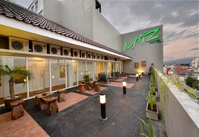
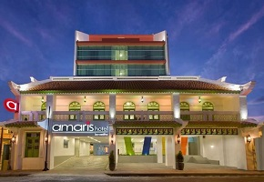

Hotel Istana Batik Ratna merupakan hotel entik di Yogyakarta. Jika Anda mengunjungi tempat ini, maka Anda akan merasa terbawa pada suasana tempo dulu yang eksotik. Interiornya didesain sangat unik dengan Batik tradisional dan arsitektur tradisional Jawa.
Alamat : Jl. Pasar Kembang No. 29, Yogyakarta

WHIZ HOTEL(bintang 2)
WHIZ HOTEL YOGYAKARTA
Daftar Hotel Bintang 2 Yogyakarta urutan kedua
Whiz Hotel menawarkan akomodasi yang sederhana dan bergaya di kawasan sibuk Malioboro. Hotel kontemporer ini sangat strategis sehingga dapat ditempuh hanya dengan berjalan kaki dari daerah perbelanjaan utama dan stasiun Tugu Yogyakarta. Jika Anda suka jalan-jalan di tengah keramaian sekaligus menikmati suasana pusat kota Yogyakarta yang hangat, Whiz Hotel adalah pilihan yang tepat.
Alamat : Jl. Dagen No.8, Malioboro, Yogyakarta

AMARIS HOTEL(bintang 2)
AMARIS HOTEL MALIOBORO
Daftar Hotel Bintang 2 Yogyakarta urutan ketiga
Amaris Hotel sangat nyaman dan cocok untuk dijadikan sebagai akomodasi pilihan terbaik Anda yang datang ke Jogya karena ingin menikmati keramaian kota dengan praktis dan cepat tanpa perlu alat transportasi. Untuk mencapai kawasan Malioboro yang sarat dengan wisata belanjanya, Anda cukup berjalan kaki saja. Dan berikut daftar Mall yang ada di sekitar hotel yang bisa Anda kunjungi selama tinggal di Amaris Hotel;